Unreal Engine Video Game
Grade 12 Communications Technology Independent Project
Creating the game:
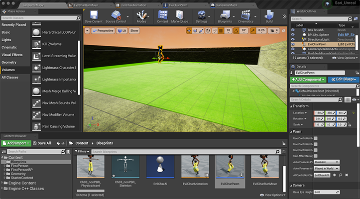
My first attempt at setting up a level: Creating a platform out of a box and forming walls to avoid falling off. Ultimately I learned this method would not work to create natural looking landscapes as the box cannot be sculpted in the way an actual landscape within Unreal Engine can.
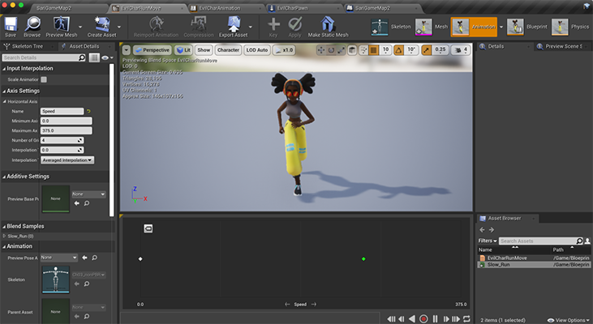
Creating an enemy character: As this project had a timeline of a week, this character is a royalty free asset from Mixamo.
Creating the character involved importing the skeleton, material texture, and glossiness; linking it to a running animation; linking it's skeletal mesh to an AI controller; and giving the AI the objective of seeking out the player.
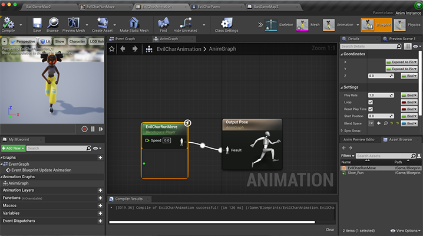
Character movement: Linking the 3D character to it's running animation, and adjusting controls like speed and transitions.
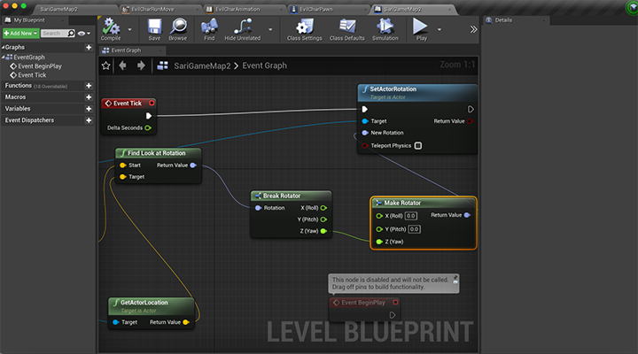
Programming Character: So far, this character has minimal programming other than the objectives of it's AI controller.
At this point I realized the character would chase down the player within the environment, but would only face left.
This is the event graph behind the character pawn to make it face the player.
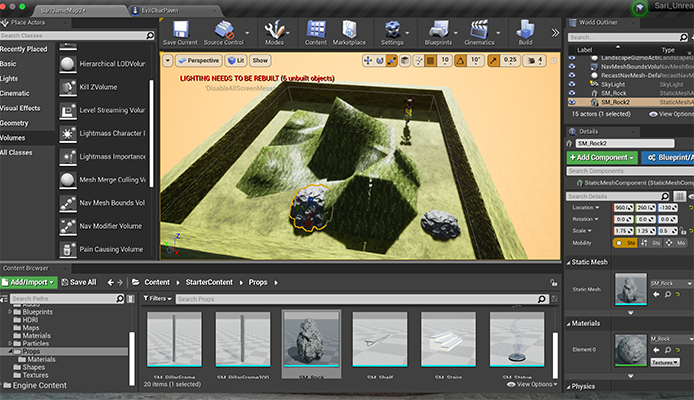
First Level: This is what my first level attempt looked like after trying to add landscape sculpting abilities on top of the prexisting box platform I had made.
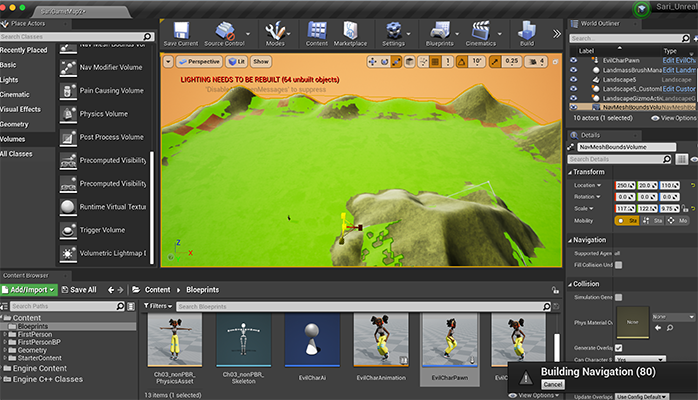
Second Level Attempt: After learning more about how to use the landscaping mode, I decided to ditch my first attempt at an environment and start over.
This allowed the creation of much more realistic looking hills using the blueprint brush tool. The lime green surface is the rendering of the enemy character's navigation box.
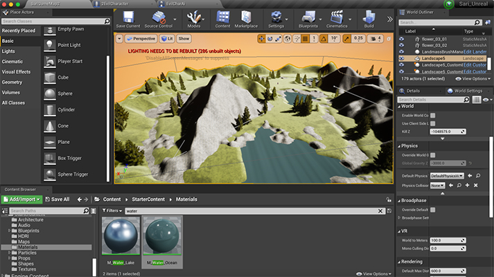
Adding details to the landscape, and updating the character.
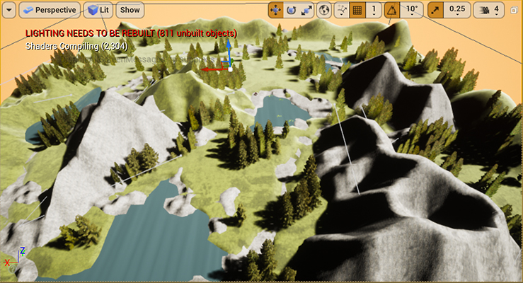
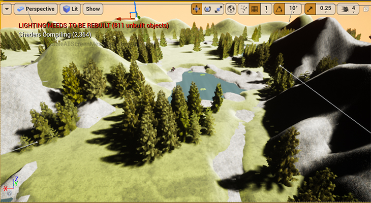
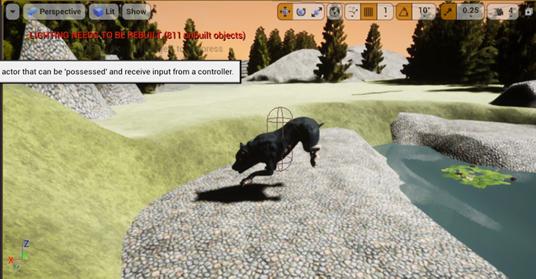
In the finished game (a standard first-person shooter style video game), you are spawned in a
rolling forest landscape with a mythical dog-looking creature. The creature will seek your character down unless you find it and shoot it first.
WASD keys are used to move, plus space to jump, and click to shoot.
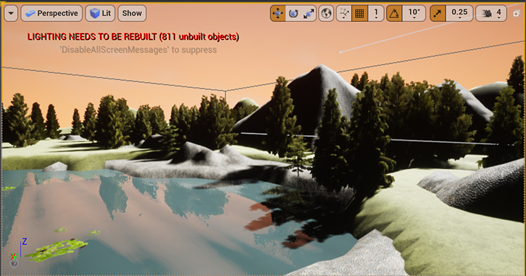